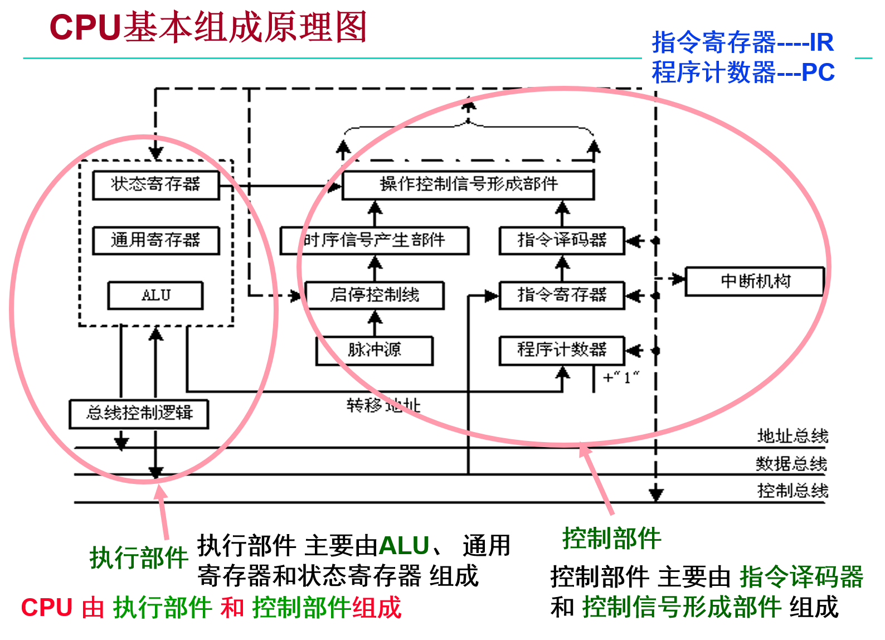
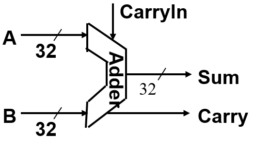
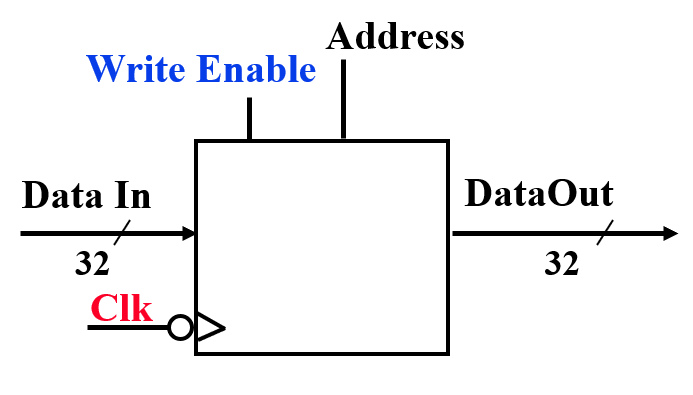
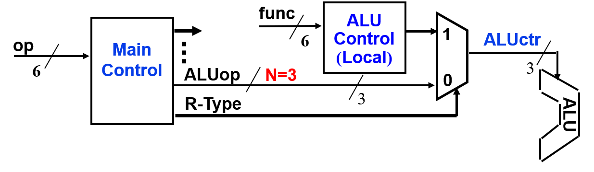

中央处理器
本文最后更新于：June 13, 2022 pm
Chapter 5: CPU
CPU的基本功能和基本组成
CPU执行指令的过程:
flowchart TB
subgraph "Instruction Fetch(取指阶段)"
IF("取指令")-->PC("PC+1送PC")
end
subgraph "Instruction Decode and Execute(译码和执行阶段)"
PC-->ID("指令译码")
ID-->AC("进行主存地址运算")
AC-->NF("取操作数")
NF-->CAL("进行算术/逻辑运算")
CAL-->MEM("对结果进行存储操作")
end
MEM-->IF
注意: 以上每步都需检测有无"异常"，若有则自动切换到异常处理程序。并且会检测是否有中断请求，有则转中断处理。

- 执行部件: 主要由ALU、通用寄存器足和状态寄存器组成
- 控制部件: 主要由指令译码器和控制信号形成部件组成
数据通路: 指令执行过程中，数据所经过的路径，以及路径上的部件。包括: ALU(运算)、通用寄存器(存储数据)、状态寄存器(存储标志位)、MMU(内存管理单元)、cache(缓存)、中断处理逻辑等。
控制器: 对指令进行译码，生成指令对应的控制信号，控制数据通路的动作。它向执行部件发出控制信号，是指令的控制部件。
CPU的功能及其与计算机性能的关系
计算机性能由三个关键因素决定:
- 指令数目: 由ISA和编译器共同决定
- CPI: 指一条指令的执行时钟周期数，由指令集决定，单周期CPU指令CPI一定为1
- 时钟周期: 对于单周期CPU，时钟周期等于最长的指令(一般为lw指令)的执行时间
指令的四个基本功能
每一条指令的功能都是由以下四种基本操作的组合来实现:
- 读取某一主存单元的内容，并将其装入某个寄存器(取指，取数)
- 把一个数据从某个寄存器存入给定的主存单元中(存结果)
- 把一个数据从某个寄存器送到另一个寄存器或者ALU(取数，存结果)
- 执行算术或逻辑运算(PC+1，计算地址，运算)
操作功能的形式化描述语言称为寄存器传送语言RTL(Register Transfer Language)，规定如下:
- 用R[r]表示寄存器r的内容
- 用M[addr]表示主存单元addr的内容
- 传送方向用"<-"表示，传送源在右，传送目的在左
- 对于程序计数器PC，直接用PC表示其内容
例如，R[$8] ← M[R[$9]+4]的含义是:
将寄存器$9的内容加4得到的内存地址单元的内容送寄存器$8中(偏移寻址)。
数据通路的基本结构
数据通路由两类元件组成:
- 组合逻辑元件(也称操作元件)
- 时序逻辑元件(也称状态元件，或存储元件)
数据通路由由操作元件和存储元件通过总线方式或分散方式连接而成。
常用的操作元件
- 加法器(Adder): 只接受输入A、输入B和进位信号，输出加法结果和进位信号。
 - 多路选择器(MUX): 输入n路信号和选路信号，输出选路信号对应的输入信号。
- 算术逻辑部件(ALU): 能进行多种不同运算，运算方式由ALUctl信号进行控制，输出计算结果和标志位。

操作元件(组合逻辑元件)特点:
- 其输出只取决于当前的输入: 若输入一样，则其输出也一样
- 无定时: 所有输入到达后，经过一定的逻辑门延时，输出端改变，并保持到下次改变，不需要时钟信号来定时
数据通路的时序控制
时序控制通过存储元件来实现，存储元件的特点:
- 有专门的时钟信号来控制元件的工作
- 具有存储功能，在时钟控制下输入被写到电路中，直到下个时钟到达
- 输入端状态由时钟决定何时被写入，输出端状态随时可以读出
定时方式: 规定信号何时写入状态元件，一般在计算机内部均采用边沿触发方式(状态单元中的值只在时钟边沿改变，每个时钟周期改变一次。可以分为上升沿触发和下降沿触发)
- Setup Time: 在触发时钟边沿之前一段时间内输入必须稳定
- Hold Time: 在触发时钟边沿之后一段时间内输入必须稳定
- Clock-to-Q Time: 锁存延时，在边沿后输出并不能立即变化而是需要经过一段时间后才能变化
只有当Clock-to-Q Time后输出才反映新的状态值。
常见的存储元件
- 寄存器: 能够存储n位数据的存储元件，具有输入端口进行接收输入，输出端口接收输出，并包含输入一个写使能信号，只有当写使能为1时才允许输入，作为存储元件一定有时钟信号的输入端口。
- 寄存器组: 是多个寄存器的组合，可以同时进行两个寄存器的读取操作或一个寄存器的写入操作。当RA和RB进行寄存器选择后，经过一个取数时间后寄存器组通过busA和busB分别将RA和RB的数据进行输出，当写使能为1时将busW的输入数据写入到RW选择的寄存器中，作为存储元件一定还有一个时钟信号的输入端口。
- 理想存储器: Address端口作为地址选择端口，通过写使能来判断本次操作为读/写操作，当写使能为1时为写，存储器将Data In端口数据写入到选择的地址中，当写使能为0时为读，存储器将选择的地址的数据输出到Data Out。

注意: 寄存器的存储位数应与触发器数目相符合，寄存器组的寄存器选择位数应与寄存器数量一致。
在数据通路中进行时序控制则必须有专门时序信号来定时，由时序信号规定何时发出什么动作。早期计算机具有三级时序系统: 机器周期 - 节拍 - 脉冲，但现代计算机已不再采用三级时序系统，在整个数据通路中定时信号就是时钟，一个时钟周期就是一个节拍。
操作元件输出有效信号最快出现必须在下一级状态元件的输入保持时间之后出现。
总线结构数据通路中四种基本功能的实现
总线结构也可按总线数量而分为单总线连接和多总线连接方式，这里以单总线数据通路和三总线数据通路来演示四种基本操作(寄存器之间的取数、寄存器从主存取数取指、写数到主存、完成运算)的实现:
-
单总线:
- 寄存器之间的取数:
R0out, Yin将寄存器数据取到ALU运算前的缓存寄存器中，仅需要1Cycle。 - 完成运算:
R1out, Yin\n R2out, Add, Zin\n Zout, R3in
先从R1中取数，再将R2中数据从总线直接传送到ALU输入端口中最后将ALU计算结果写入到Z中，通过总线将Z中数据传输到R3中。 - 从主存中取数:
R1out, MARin\n Read, WMFC(等待MFC返回取数成功信号)\n MDRout, R2in
MAR为存储器地址寄存器，MDR为存储器数据寄存器，将R1内地址取出送入MAR中，等待MFC应答后从MDR中取数到R2中。 - 写数到主存:
R1out, MARin\n R2out, MDRin\n Write, WMFC(等待MFC返回写入成功信号)
将R1内的地址通过总线送入MAR中，将R2内的数据通过总线送入MDR中，等待MFC应答后将数据写入完成。
- 寄存器之间的取数:
-
多总线:
单总线中一个时钟内只允许传一个数据，因而指令执行效率很低，多总线方式可同时在多个总线上传输不同数据来提高效率。
实现一个时钟周期完成单条运算:R1out, R2out, op, R3in，通过总线同时实现R1、R2内数据的取出和传输，并通过ALU计算直接传输到R3进行存储。
单周期MIPS处理器的设计
MIPS数据通路设计
明确只需掌握经典7条指令的数据通路设计即可。
- add: add rd, rs, rt(rd = rs + rt)
- sub: sub rd, rs, rt(rd = rs - rt)
- ori: ori rt, rs, imm16(rt = rs | imm16)
- lw: lw rt, imm16(rt = [rs + imm16])
- sw: sw rt, imm16([rs + imm16] = rt)
- beq: beq rs, rt, imm16(if rs == rt, PC = PC + 4 + (imm16 << 2))
- j: j target26(PC = PC[31:28] + target26 + 00)
在下面各指令的数据通路图中，蓝色部分部件为从上一指令数据通路增加后来完成更多指令功能的重要部件。
add/sub的RTL描述和数据通路
指令: add/sub rd, rs, rt是R型指令的代表。
graph TD
label1("M[PC](取指令)")-->label2("R[rd] <- R[rs] +/- R[rt](做运算)")
label2-->label3("PC <- PC + 4(更新PC)")
在取指令后经控制器译码产生RegWr写使能信号=1和ALUctl控制信号=add/sub，由寄存器组提供rs、rt数据作为ALU的输入，ALU计算结果作为输入输出到busW中，如果没有产生溢出(OF=0)，则与RegWr取并运算得到1激活写使能端口将结果写入到rd寄存器中。
ori的RTL描述和数据通路
指令: ori rt, rs, imm16是I型指令的代表。
graph TD
label1("M[PC](取指令)")-->label2("R[rt] <- R[rs] or ZeroExt(imm16)(做运算)")
label2-->label3("PC <- PC + 4(更新PC)")
ori指令为立即数0扩展后与rs做或运算，因此相比于add/sub指令，ori数据通路应该增加扩展器Ext，同时写入寄存器位rt而不是rd，因此在Rw口应该增加多路选择器Mux使rd和rt均可作为写入寄存器，同时ALU输入端也应该增加Mux使输入可选项可以为busB或imm16。
根据图中数据通路设计，RegDst信号=1(rt为写入选择器)，RegWr=1(需要写入寄存器因此写使能等于1)，ALUctr=or，ALUSrc=1(imm16作为ALU输入)。
lw的RTL描述和数据通路
指令: lw rt, rs, imm16是访问内存指令的代表。
graph TD
label1("M[PC](取指令)")-->label2("Addr <- R[rs] + SignExt(imm16)(计算存储单元地址)")
label2-->label3("R[rt] <- M[Addr](从地址取数据)")
label3-->label4("PC <- PC + 4(更新PC)")
从内存中取数或存数都是采用偏移寻址的方式，因此要先对立即数做符号扩展才能计算目的数的地址，因此需要将扩展器改为支持多种扩展方式的扩展器并增加控制信号来控制扩展器的扩展方式。同时因为寄存器组的输入由ALU计算结果改为内存取出的数，在busW前应增加一个多路选择器Mux，使其可以选择ALU计算结果或内存取出的数作为写入rt。
因为需要在rt与rd中做选择，所以RegDst=1目的寄存器位rt，RegWr=1写使能端口为1，ALUctul为addu(addu表示ALU不做溢出检查，因为用add可能会产生OF=1的异常)，ExtOP=1做符号扩展，ALUSrc=1表示imm16符号扩展结果作为ALU输入，内存需要写入到寄存器则MemtoReg=1。
sw的RTL描述和数据通路
指令: sw rt, rs, imm16是访问内存指令的代表。
graph TD
label1("M[PC](取指令)")-->label2("Addr <- R[rs] + SignExt(imm16)(计算存储单元地址)")
label2-->label3("Mem[Addr] <- R[rt](向内存写入数据)")
label3-->label4("PC <- PC + 4(更新PC)")
从逻辑上说，只需要给rt的输出写到内存途径即可，因此在busB后加一个Mux可以选择ALU输入端和内存输入端即可。由于增加了内存写入功能，对内存也应有写使能信号，控制信号也应该新加一个MemWr信号，控制信号为1时内存可以写入数据。
因为没有对寄存器进行写操作因此RegDst=x，RegWr=0禁止写寄存器，ALUctul为addu(addu表示ALU不做溢出检查，因为用add可能会产生OF=1的异常)，ExtOP=1做符号扩展，MemWr=1写入内存，MemtoReg=x因为寄存器的写使能已经为0。
beq的RTL描述和数据通路
指令: beq rs, rt, imm16是条件跳转指令的代表。
graph TD
label1("M[PC](取指令)")-->label2("Cond <- R[rs] == R[rt](做减法比较rs和rt中的内容)")
label2-->label3("if (Cond eq 0) PC <- PC + 4 + SignExt(imm16) * 4(计算下地址并跳转)")
label3-->label4("else PC <- PC + 4(不跳转)")
beq指令为相等跳转，bne为不相等跳转，实现思路为rs内容与rt内相减，通过ALU的标志位ZF来判断rs内容与rt内容是否相等，将标志位传递给下址计算部件即可。因此只需**增加下址计算部件(将PC+4功能同时实现)**即可完成数据通路。
条件转移没有对寄存器和存储器进行读写操作因此RegWr=MemWr=0，因为有写使能做保护RegDst=MenmtoReg=x可以为任意值，ALUctl仍然取addu无符号加法防止溢出来实现转移地址的计算，ALUSrc=0因为无立即数参加，但为下址计算部件设定转移信号Branch=1，来激活下址计算部件。
下址计算部件的设计: PC是32位地址，当
- 顺序执行时: PC<31:0> = PC<31:0> + 4
- 转移执行时: PC<31:0> = PC<31:0> + SignExt(imm16) 4
因为MIPS按字节编址，因此PC的值总是4的倍数，即后两位为00，去除这2位，PC只需要30位即可。下地址计算逻辑简化为:
- 顺序执行时: PC<31:2> = PC<31:2> + 1
- 转移执行时: PC<31:2> = PC<31:2> + 1 + SignExt(imm16)
在取指令时将PC<31:2>串接00即可得到32位PC。
因为下址计算只涉及到加法因此只需要使用Adder即可而不需更复杂功能更全面的ALU部件。
j的RTL描述和数据通路
指令: j target26是无条件跳转指令的代表。
graph TD
label1("M[PC](取指令)")-->label2("PC<31:2> <- PC<31:28>串接target(计算转移地址)")
跳转指令的范围: 只能在j指令所在的页面内，页面号与j指令相同PC<31:28>。
MIPS CPU数据通路
在上面7条指令的数据通路可以看出，PC取指和下址计算与地址转移是每条指令的公共操作，因此可以把部分合成一个取指部件。
通过一条条指令的实现而推导出了能实现开始所说的7条指令的MIPS CPU的数据通路。推导过程是Computer Organization and Architecture这门课的核心。
单周期CPU控制器设计
ISA确定后，控制器设计大致步骤如下:
- 分析每条指令的功能并用RTL表示
- 确定数据通路
- 确定每个元件所需控制信号的取值
- 生成一张指令与控制关系的表
- 根据表得到每个控制信号的逻辑表达式
控制信号产生的逻辑在数据通路设计与分析中已分析，这里直接给出不同指令的控制信号值，需要掌握根据数据通路计算出控制信号的能力。
add/sub控制信号
| RegDst | ALUSrc | ALUctr | MemWr | ExtOP | RegWr | MemtoReg | Branch | Jump |
|---|---|---|---|---|---|---|---|---|
| 1 | 0 | add/sub | 0 | x | 1 | 0 | 0 | 0 |
ori/控制信号
| RegDst | ALUSrc | ALUctr | MemWr | ExtOP | RegWr | MemtoReg | Branch | Jump |
|---|---|---|---|---|---|---|---|---|
| 0 | 1 | or | 0 | 0 | 1 | 0 | 0 | 0 |
lw控制信号
| RegDst | ALUSrc | ALUctr | MemWr | ExtOP | RegWr | MemtoReg | Branch | Jump |
|---|---|---|---|---|---|---|---|---|
| 0 | 1 | addu | 0 | 1 | 1 | 1 | 0 | 0 |
sw控制信号
| RegDst | ALUSrc | ALUctr | MemWr | ExtOP | RegWr | MemtoReg | Branch | Jump |
|---|---|---|---|---|---|---|---|---|
| x | 1 | addu | 1 | 1 | 0 | 0 | 0 | 0 |
beq控制信号
| RegDst | ALUSrc | ALUctr | MemWr | ExtOP | RegWr | MemtoReg | Branch | Jump |
|---|---|---|---|---|---|---|---|---|
| x | 0 | sub | 0 | x | 0 | x | 1 | 0 |
j控制信号
| RegDst | ALUSrc | ALUctr | MemWr | ExtOP | RegWr | MemtoReg | Branch | Jump |
|---|---|---|---|---|---|---|---|---|
| x | x | x | 0 | x | 0 | x | 0 | 1 |
生成控制器表
设计控制器部件
控制器 = 主控制单元 + ALU局部控制单元

ALUctr有6种操作: sdd, sub, or, and, addu, subu，因此需要3位来表示。在译码后将op传给主控制器产生ALUop信号，func传给ALU局部控制器，对于非R型指令ALUctl=ALUop，R型指令由func译码产生。
ALU局部控制器
非R型指令的ALUop产生方式为:
R型指令的ALUctl的产生:
主控制单元
通过真值表根据卡诺图可以得到控制信号的逻辑表示式，这里控制信号产生仅用于7条指令:
控制器设计小结
- 控制器设计的关键是找出指令格式中规定指令功能(类型)的字段与各条指令所需要的控制信号之间的关系。MIPS指令中有op和func两个字段用来表示指令的功能。
- R型指令: 所有指令的op字段都为000000，各指令的func字段用来产生ALU的控制信号，决定执行的操作(加、减、逻辑与)，其它数据通路的控制信号各指令都相同(仅考虑三寄存器操作数)
- 其他类型指令：没有func字段，各指令的op字段不同，它产生包括ALU的所有数据通路的控制信号
- 控制器结构分成主控制器和ALU局部控制器两部分
- ALU局部控制器是为R型指令产生ALU的控制信号，其输入为func字段
- 主控制器产生非R型指令的所有控制信号，以及R型指令的除ALU控制信号外的其他控制信号，其输入为op字段
- 将主控制器产生的ALU控制信号与ALU局部控制器的输出信号通过一个多路选择器合并后作为最终的ALU控制信号。多路选择器的选择信号(R-Type)由主控制器产生
MIPS单周期计算机的性能
**在本章开始说过计算机性能由三个关键因素决定: 指令数目、CPI、时钟周期。**单周期CPU的CPI一定为1，MIPS单周期CPU指令数设计过程如上，因此只支持7条指令，评价其性能只需考虑时钟周期宽度的确定。
在MIPS中lw指令的执行时间最长，因此时钟周期宽度为lw指令执行所需时间！
例: 在单周期处理器中，各主要功能单元的操作时间为: 存储单元200ps，ALU和加法器100ps，寄存器组(读/写)50ps，MUX、控制单元、PC、扩展器和传输线路都没有延迟。程序中各类指令占比: 25%取数、10%存数、45%ALU、15%分支、5%跳转，该程序共有n条指令。
- 计算各指令执行时间(以lw指令为例): 时钟周期为最长指令执行时间，一般为load类型指令。(PC取指–>下址计算–>放入PC–>寄存器取数–>ALU计算有效地址–>存储器取数–>写入寄存器)
- 计算时钟周期: 经过第一步得到所有指令执行时间分别为: R-type=400ps, lw=600ps, sw=550ps, Branch=350ps, Jump=200ps，因此时钟周期为600ps。
- 计算总时间:
微程序控制原理与异常处理
微程序设计
微程序控制器和硬连线控制器的对比
- 硬连线控制器:
- 优点: 速度快，适合于简单或规整的指令系统，如MIPS指令集
- 缺点: 它是一个多输入/多输出的巨大逻辑网络。对于复杂指令系统来说，结构庞杂，实现困难；修改、维护不易；灵活性差
- 微程序控制器:
- 仿照程序设计的方法，编制每条指令对应的微程序，每个微程序由若干条微指令构成，一条微指令包含若干个微命令，每个微命令就是一个控制信号
- 所有指令对应的微程序放在只读存储器中，执行某条指令就是取出对应微程序中的各条微指令，对微指令译码产生对应的微命令(即控制信号)。这个只读存储器称为控制存储器(Control Storage)，简称控存CS
- 优点: 具有规整性、可维护性和灵活性
- 缺点: 速度慢
微指令设计可以分为两类设计模式:
- 水平型微指令:
- 基本思想: 相容微命令尽量多地安排在一条微指令中(尽量将相似的控制信号放在一起)
- 优点: 微程序短，并行性高，适合于较高速度的场合
- 缺点: 微指令长，编码空间利用率较低，并且编制困难
- 垂直型微指令:
- 基本思想: 一条微指令只控制一、二个微命令
- 优点: 微指令短，编码效率高，格式与机器指令类似，故编制容易
- 缺点: 微程序长，一条微指令只能控制一、二个操作，无并行，速度慢

可以看到微指令和指令的格式十分相似: 均有操作码、地址字段。
OP的编码方式有:
- 不译法: 直接控制
- 字段直接编码法: 水平型微指令风格
- 字段间接编码法: 水平型微指令风格
- 最小编码法: 垂直型微指令风格
微指令下址产生:
- 增量计数器法: 下条微指令地址隐含在微程序计数器PC中
- 断定法: 在本条微指令中明显指定下条微指令地址，通过断定法可以实现顺序执行和分支执行
CPU对异常的处理
程序执行过程中CPU会遇到一些特殊情况，使正在执行的程序被"中断"，然后CPU中止原来正在执行的程序，转到处理异常情况或特殊事件的程序去执行，执行后再返回到原被中止的程序处(断点)继续执行。
异常和中断的区别:
- 异常: 在CPU内部发生的意外事件或特殊事件，按发生原因分为硬故障异常和程序性异常两类
- 硬故障异常: 如电源掉电、硬件线路故障等
- 程序性异常: 执行某条指令时发生的"例外(Exception)"，如溢出、缺页、非法指令、除数为0、堆栈溢出等等
- 中断: 外部请求中断，在CPU外部发生的特殊事件，发送请求和CPU需要处理中断，如打印机缺纸、外设准备好、采样计时到、DMA传输结束等。外部中断是一种I/O方式
异常的处理
异常按处理方式又分为故障、自陷和终止三类
- 故障(fault): 执行指令引起的异常事件，如溢出、缺页、堆栈溢出、访问超时等
- 自陷(trap): 预先安排的事件，如单步跟踪、系统调用(执行访管指令)等，自陷处理完成后 回到下条指令
- 终止(abort): 硬故障事件，此时机器将"终止"，调出中断服务程序来重启操作系统
缺页、TLB缺失等: 补救后可继续，回到发生故障的指令重新执行
溢出、除数为0、非法操作、内存保护错等: 终止当前进程
异常处理机制:
- 关中断: 关闭中断/异常请求允许，使处理器处于"禁止中断"状态，以防止新异常(或中断)破坏断点、程序状态和现场
- 保护断点和程序状态: 将断点和程序状态保存到堆栈或特殊寄存器中
- PC -> 堆栈或EPC(专门存放断点的寄存器)
- PSWR -> 堆栈或EPSWR(专门保存程序状态的寄存器)
- 识别异常事件: 有软件识别和硬件识别(向量中断方式)两种不同的方式
- 软件识别: MIPS采用，设置一个异常状态寄存器(MIPS中为Cause寄存器)，用于记录异常原因。操作系统使用一个统一的异常处理程序，该程序按优先级顺序查询异常状态寄存器的各位，识别出异常事件
- 硬件识别(向量中断方式): 用专门的硬件查询电路按优先级顺序识别异常，得到"中断类型号"，根据此号，到中断向量表中读取对应的中断服务程序的入口地址
中断的处理
中断的处理在互连及输入输出组织中详细介绍。
本博客所有文章除特别声明外，均采用 CC BY-SA 4.0 协议 ，转载请注明出处！